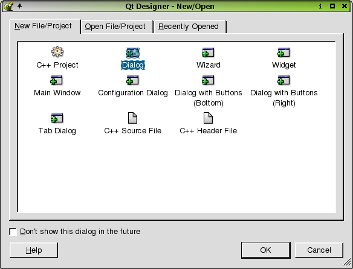
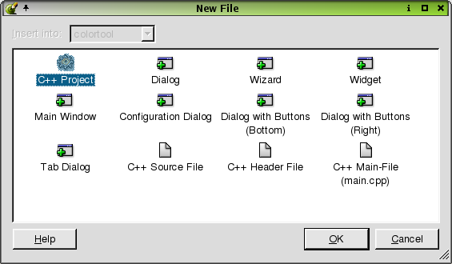
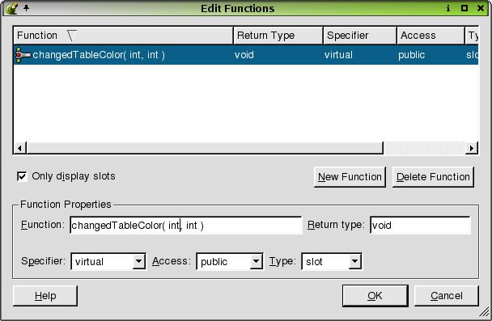

| Home | All Classes | Main Classes | Annotated | Grouped Classes | Functions |
[Prev: Quick Start] [Home] [Next: Creating Dialogs]
In this chapter and in chapter three we will create a small but complete Qt application called colortool. The colortool application is used to associate names with colors. It consists of a standard main window application with some custom dialogs to facilitate some of the user interaction.This chapter will cover the main window, and the next chapter covers the dialogs that complete the application.
The colortool application is a multiplatform application that allows users to create, edit and save lists of colors. Each color has a user defined name and an RGB (Red, Green, Blue) value.
This application presents the user with a view of a set of colors and their names. We will provide two views (using a QWidgetStack) which the user can switch between. The tabular view will show each color as a small square followed by its name and hex value. It will also provide the option of an indicator to show whether or not the color is one of the 216 standard web colors. The iconic view will show each color as a circular color swatch with the name of the color beneath.
The application will read and write files in the format used by the X Consortium for the rgb.txt file. This will allow users to create their own color files and to load, edit and save rgb.txt format files.
We will provide a simple search option so that users can quickly locate a color; this is particularly useful when hundreds or thousands of colors are shown. The search will be provided in a modeless dialog so that the user can conduct a search but still interact with the main form. We will also enable the user to add and delete colors, and to set some user options. To provide these facilities, we must create some modal dialogs.
Finally, we must ensure that the application loads user options at start up and saves user options at termination. We will also include the view and the size and position of the main window with these options, so that the application will always start with the size, position and view it had when the user last used it.
To start Qt Designer under Windows click the Start button and click Programs|Qt X.x.x|Designer. (X.x.x is the Qt version number, e.g. 3.1.0.) If you're running a Unix or Linux operating system you can either double click the Qt Designer icon or enter designer & in an xterm.
When Qt Designer starts, it shows the New/Open dialog. If you prefer to not have this dialog appear the next time you open Qt Designer, check the "Don't show this dialog in the future" checkbox.
For this example, click Cancel to skip over the dialog.

When you've finished using Qt Designer click File|Exit; you will be prompted to save any unsaved changes. Help is available by pressing F1 or from the Help menu.
To get the most benefit from the tutorial chapters we recommend that you start Qt Designer now and create the colortool application as you read. Most of the work involves using Qt Designer's menus, dialogs and editors. We also suggest that as you work through this manual you enter the code directly using Qt Designer's code editor. You can cut and paste the code from the on-line version of this manual or copy it from the example source code.
When you start Qt Designer, by default, you will see a menu bar and various toolbars at the top. On the left is the widget Toolbox. Click the toolbox's buttons to reveal a particular set of tools. On the right there are three windows: the first is the Project Overview window, the second is the Object Explorer window, and the third is the Properties Editor/Signal Handlers window. The Project Overview window lists the files and images associated with the project; to open any form (.ui file), or the code associated with it (in the .ui.h file), simply single click it. The Object Explorer window lists the current form's widgets and members. The Properties Editor/Signal Handlers window is used to view and change the properties of forms and widgets. We will cover the use of Qt Designer's windows, dialogs, menu options and tools as we create the example application.
Our colortool application is going to be a standard C++ application, so we need to create a C++ project and add our files and code to this project.
Creating a Project
Whenever you create a new application we recommend that you create a project file and open the project rather than individual .ui files. Using a project has the advantage that all the forms you create for the project are available via a single mouse click rather than having to be loaded individually through file open dialogs. An additional benefit of using project files is that they allow you to store all your images in a single file rather than duplicate them in each form in which they appear. See The Designer Approach chapter's Project management section for detailed information on the benefits of using project files.
Project files use the .pro suffix and are used by the qmake tool to create makefiles for the relevant target platforms.
Create a new project as follows:
Click File|New to invoke the New File dialog.
Click "C++ Project" to create a C++ project, then click OK to invoke the Project Settings dialog.
Click the ellipsis button to the right of the Project File line edit to invoke the Save As dialog. Use this dialog to navigate to where you want to create the new project, ideally creating a new folder for it (e.g. called "colortool"), using the Create New Folder toolbar button.
Enter "colortool.pro" as the file name, then click Save. The project's name will now be "colortool"; click OK to close the Project Settings dialog.
Click File|Save to save the project.

The New File dialog is used to create all the files that can be used in a Qt Designer project. This includes C++ source files, an automatically generated main.cpp file (if you are in a project), and a variety of forms based on pre-defined templates. (You can create your own templates too.)
For the colortool application we want to start with a main window form. When we create this form, Qt Designer will present a wizard which we can use to automatically create menu and toolbar options and automatically create the relevant signal/slot connections. For every menu option or toolbar button, Qt Designer will create a single QAction (see the Actions and Action Groups sidebar).
Actions and Action Groups
An action is an operation that the user initiates through the user interface, for example, saving a file or changing some text's font weight to bold.
We often want the user to be able to perform an action using a variety of means. For example, to save a file we might want the user to be able to press Ctrl+S, or to click the Save toolbar button or to click the File|Save menu option. Although the means of invoking the action are all different, the underlying operation is the same and we don't want to duplicate the code that performs the operation. In Qt we can create an action (a QAction object) which will call the appropriate function when the action is invoked. We can assign an accelerator, (e.g. Ctrl+S), to an action. We can also add an action to a menu and to a toolbar.
If the action has an on/off state, e.g. bold is on or off, when the user changes the state, for example by clicking a toolbar button, the state of everything associated with the action, e.g. menu items and toolbar buttons, is updated.
Some actions should operate together like radio buttons. For example, if we have left align, center align and right align actions, only one should be 'on' at any one time. An action group (a QActionGroup object) is used to group a set of actions together. If the action group's exclusive property is TRUE then only one of the actions in the group can be on at any one time. If the user changes the state of an action in an action group where exclusive is TRUE, everything associated with the actions in the action group, e.g. menu items and toolbar buttons, is updated.
Qt Designer can create actions and action groups visually, assign accelerators to them, and associate them with menu items and toolbar buttons.
We will use the Main Window Wizard to build a main window. The wizard allows us to create actions as well as a menu bar and a toolbar through which the user can invoke the actions. We will also create our own actions, menus and toolbar buttons, and add a main widget to the main window.
Click File|New to invoke the New File dialog, click "Main Window" to create a main window form, then click OK. A new QMainWindow form will be created and the Main Window Wizard will pop up.
The Choose available menus and toolbars page appears first. It presents three categories of default actions, File Actions, Edit Actions and Help Actions. For each category you can choose to have Qt Designer create menu items, toolbar buttons, and signal/slots connections for the relevant actions. You can always add or delete actions, menu items, toolbar buttons, and connections later.
We will accept the defaults for File Actions and for the Edit Actions, i.e. have menu items, toolbar buttons and the relevant connections created. In fact we'll be changing the Edit actions considerably later on, but it is still convenient to create them now. We won't have any Help Actions on the toolbar so uncheck the Help Action's Toolbar checkbox. Click Next to move on to the next wizard page.
Main Window Wizard- Choosing menus and toolbars
The Setup Toolbar wizard page is used to populate a toolbar with actions from each of the default action categories. The Category combobox is used to select which set of actions you wish to choose from. The Actions list box lists the actions available for the current category. The Toolbar listbox lists the toolbar buttons you want to create. The blue left and right arrow buttons are used to move actions into or out of the Toolbar list box. The blue up and down arrow buttons are used to move actions up and down within the Toolbar list box. Note that the '<Separator>' item in the Actions list box may be moved to the Toolbar list box as often as required and will cause a separator to appear in the finished toolbar.
Copy the New, Open, and Save Actions to the Toolbar list box. Copy a <Separator> to the Toolbar list box. Change the Category to Edit and copy the Cut, Copy, and Find actions to the Toolbar list box. Click Next and then click Finish.
Click File|Save and save the form as mainform.ui.

Main Window Wizard- Setting up the toolbar
If you preview the form (Ctrl+T) the File and Edit menus will be available and you'll be able to drag the toolbar either into an independent window of its own, or to dock it to the left, right, bottom, or top of the window. The menus and toolbars are not yet functional, but we will rectify this as we progress. You leave preview mode by clicking the form's Close box (or the platform-specific equivalent).
Previewing the Form
Now that we've created the form we will need to change some of its properties. (See the Using the Property Editor sidebar.)
Using the Property Editor
The Property Editor has two columns, the Property column which lists property names and the Value column which lists the property values. Some property names have a plus sign '+' in a square to their left; this indicates that the property name is the collective name for a set of related properties. Click a form or widget to make the Property Editor show the form or widget's properties.
For example, click the sizePolicy property's plus sign; you will see four properties appear indented below sizePolicy: hSizeType, vSizeType, horizontalStretch and verticalStretch. These properties are edited in the same way as any other properties.
If you want to change the same property to the same value for a whole set of widgets, (e.g. to give them all a common cursor, tooltip, colors, etc.), Click one of the widgets, then Shift+Click the others to select them all. (Alternatively, click the first widget's name in Object Explorer, then Shift+Click all the others in Object Explorer: this technique is especially useful for forms with lots of nested widgets and layouts.) The properties they have in common will be shown in the property editor, and any change made to one property will be made to that same property for all the selected widgets.
Property Editor
Some properties have simple values, for example, the name property has a text value, the width property (within minimumSize) has a numeric value. To change a text value click the existing text and type in your new text. To change a numeric value click the value and either type in a new number, or use the spin buttons to increase or decrease the existing number until it reaches the value you want. Some properties have a fixed list of values, for example the mouseTracking property is boolean and can take the values True or False. The cursor property also has a fixed list of values. If you click the cursor property or the mouseTracking property the value will be shown in a drop down combobox; click the down arrow to see what values are available. Some properties have complex sets of values or special values; for example the font property and the iconSet property. If you click the font property an ellipsis button (...) will appear; click this button and a Select Font dialog will pop up which you can use to change any of the font settings. Other properties have ellipsis buttons which lead to different dialogs depending on what settings the property can have. For example, if you have a lot of text to enter for a text property you could click the ellipsis button to invoke the Multi-line Edit dialog.
The names of properties which have changed are shown in bold. If you've changed a property but want to revert it to its default value click the property's value and then click the red 'X' button to the right of the value. Some properties have an initial value, e.g. 'TextEdit1', but no default value; if you revert a property that has an initial value but no default value (by clicking the red 'X') the value will become empty unless the property, e.g. name, is not allowed to be empty.
The property editor fully supports Undo and Redo (Ctrl+Z and Ctrl+Y, also available from the Edit menu).
Click the form to make all of its properties appear in the Property Editor. Change the form's name to "MainForm" and its caption to "Color Tool".
Now we'll need to delete some actions that the main window wizard created but that are not relevant to our application.
Click the Object Explorer's Members tab. Right click the filePrint() slot, then click Delete from the popup menu. In the same way delete the editUndo(), editRedo() and editPaste() slots. Later we'll see how to create new slots when we add further functionality to the application.
We also need to delete these actions in the Action Editor window. Right click the filePrintAction action, then click Delete Action from the popup menu. In the same way delete the editUndoAction, editRedoAction and editPasteAction actions.
Finally, we need to delete those separators in the form's menu that have become redundant because they separated actions that we've now deleted.
Note that the Action Editor window is dockable, so if you don't want it to float freely you can drag it to one of Qt Designer's dock areas (top, left, right, bottom of the main window) if preferred.
Click the form's File menu. (Note, we're clicking our newly created form's File menu, not Qt Designer's File menu!) There are two separators above the Exit menu option (the File|Print option was in-between until we deleted it). Click one of these separators, then press the Delete key. Don't worry if you miss and delete a menu option by accident: if you delete the wrong thing click Edit|Undo to undelete. The form's Edit menu has a redundant separator at the top (the undo and redo options were there). Delete this separator in the same way. Again, don't worry if you delete a menu option by mistake, just press Ctrl+Z to undo.
Click File|Save to save the form.
The form can now be previewed by clicking Preview|Preview Form (or press Ctrl+T).
The Object Explorer
View the Object Explorer window by clicking Window|Views|Object Explorer. The Object Explorer has two tabs, the Objects tab which shows the object hierarchy, and the Members tab which shows the members you have added to the form. Click the name of a widget in the Objects tab to select the widget and show its properties in the Property Editor. It is easy to see and select widgets in the Object Explorer which is especially useful for forms that have many widgets or which use layouts. Multiple widgets can be selected by Clicking the first one then Shift+Clicking the others.
Object Explorer
In the original version of Qt Designer if you wanted to provide code for a form you had to subclass the form and put your code in the subclass. This version fully supports the subclassing approach, but now provides an alternative: placing your code directly into forms. Writing code in Qt Designer is not quite the same as subclassing, for example you cannot get direct access to the form's constructor or destructor. If you need code to be executed by the constructor create a slot called void init(); if it exists it will be called from the constructor. Similarly, if you need code to be executed before destruction create a slot called void destroy(). You can also add your own class variables which will be put in the generated constructor's code, and you can add forward declarations and any includes you require. To add a variable or declaration, right click the appropriate item, e.g. Class Variables, then click New then enter your text, e.g. QString m_filename. If one or more items exist, right click to pop up a menu that has New, Edit and Delete options. If you want to enter multiple items, e.g. multiple include files or multiple data members, it is easiest to right click in the relevant section, then click Edit to invoke an Edit dialog. To edit code, just click the name of a function to invoke the code editor. Code editing and creating slots are covered later in the chapter.
If you subclass the form you create your own .cpp files which can contain your own constructor, destructor, functions, slots, declarations and variables as your requirements dictate. (See Subclassing for more information.)
We want to provide the user with actions that are specific to our application. We want to provide the ability to switch between the two views we will be offering, and allow the user to add colors and set their preferred options. We'll prepare the way by creating a new menu for the view options and by adding a separator to the toolbar.
Click "new menu" on the menu bar and type "&View" over the text. The & (ampersand) causes the following character to be underlined and to become an Alt-accelerator (i.e., in this case Alt+V will pop up the View menu).
The Menu Bar
Duplicate Accelerators
In an application that has dialogs with lots of widgets it is easy to accidentally duplicate accelerators. Qt Designer provides the Edit|Check Accelerators menu option (Alt+R) which will highlight any two or more widgets which have the same accelerators, making it easy to spot the problem if it occurs.
Drag the View menu to the left of the "Help" menu and release it there. (A vertical red line indicates its position.)

Dragging the View Menu Item
We could create a new toolbar for the View menu items, but instead we'll put a separator at the end of the existing toolbar and add the View options after the separator. Right click the right-most toolbar button ("Find"), then click Insert Separator. Alternatively, we could have created an entirely new toolbar. See Creating and Populating Toolbars for more information on doing this.
Insert Separator in the Toolbar Menu
Creating and Populating Toolbars
A new toolbar is created by clicking to the right of the existing toolbars, then clicking Add Toolbar. The new toolbar is empty and is visible only by its toolbar handle. (Toolbar handle's are usually represented as a gray area containing either two thick vertical lines or with many small pits).
Toolbar Handle
Actions are added to toolbars simply by dragging them from the Action Editor to the toolbar, and dropping them on the toolbar in the position we want them. (The position is indicated by a vertical red line.)
Dragging the Action Group to the Toolbar
All the actions in an action group are added to a toolbar in one go, simply by dragging the action group from the Action Editor and dropping it on the toolbar.
Since toolbar buttons normally only show an image, all actions that are to be used in toolbars should have their iconSet property set to a suitable image.
Toolbar buttons and separators (usually represented as indented vertical gray lines), can be dragged and dropped into new positions in the toolbar at any time. Separators can be inserted by right clicking a toolbar button and clicking Insert Separator. Toolbar buttons and separators can be deleted by right clicking them and then clicking Delete Item. Toolbars can be deleted by right clicking their toolbar handle and then clicking Delete Toolbar.
If you preview an application you'll find that all the toolbars can be dragged to different docking points (top, left, right and bottom of a QMainWindow or subclass), or dragged out of the application as independent tool windows.
Adding Widgets to the Toolbar
Sometimes a simple button is insufficient for our needs. For example, if we wanted the user to be able to choose a font name and font size from the toolbar we might want to provide a direct means rather than having a toolbar button launch a font dialog.
It is perfectly feasible to add ComboBoxes and SpinBoxes to toolbars. For example, a ComboBox could be used to list the available font names and the SpinBox used to select a font size.
Although you can put any widget into a toolbar we recommend that widgets which can be associated with an action should not be added to the toolbar directly. For these widgets, i.e. menu items, toolbar buttons and lists of items, you should create an action (drop down action for a list of items), associate the action with the widget, and add the action to the toolbar. Widgets that can sensibly be inserted directly into a toolbar are ComboBoxes, SpinBoxes and Line Edits.
Right click the first action in the Action Editor, then click New Action. The Property Editor now shows the new action's properties. Change the action's name property to "optionsAction". Click the ellipsis button on the iconSet property to pop up the Choose an Image dialog. Click the Add button to invoke the Choose Images... dialog. Navigate to /tools/designer/examples/colortool/images; click the tabwidget.png image. Click Open to use it and then click OK once you are in the Choose an Image dialog. Change the text property to "Options" and change the menuText property to "&Options...".
Click the Options action in the Action Editor and drag it to the Edit menu. The Edit menu will pop up; drag the Options action down the menu (a horizontal red line indicates its position), and drop it at the end after the "Find" item.
Alternative Approach to Adding the Options Action
Click Edit on the menu bar and then click "new item", located after the Find menu item. Type "&Options" over "new item" to rename it and press Enter. Move the arrow key to the space to the left of the Options menu item (the pixmap field) and press Enter. The Choose an Image dialog pops up. Click the Add button to invoke the Choose Images... dialog. Navigate to /tools/designer/examples/colortool/images; click the tabwidget.png image. Click Open to use the image and then click OK once you are in the Choose an Image dialog. The pixmap now appears next to the Options item in the menu.
The options action ought to be visually separated from the other Edit menu options. Click the form's Edit menu, then click and drag the "new separator" item to the space above the Options item.
Since we also want to make this option available from the toolbar, click the Options action in the Action Editor and drag it to the toolbar. Drop it to the right of the magnifying glass (Find) toolbar button (after the separator); a horizontal red line indicates its position during the drag.
We'll connect and code this action later.
Right click the first action in the Action Editor, then click New Action. Change the action's name property to "editAddAction". Change its iconSet property to widgetstack.png. Change the text property to "Add" and the menuText property to "&Add...". Change the accel property to "Ctrl+A" (press CTRL+A and the key combination will automatically appear in the field).
Click the Add action and drag it to be the first item in the Edit menu. (Drag it to the edit menu and drop it when the horizontal red line is above the "Cut" menu item.)
Alternative Approach to Adding the Add Action
Click Edit on the menu bar and then click "new item", located after the Find menu item. Type "&Add" over "new item" to rename it and press Enter. Move the arrow key to the space to the left of the Add item and press Enter. The Choose an Image dialog pops up.Click the Add button to invoke the Choose Images... dialog. Navigate to /tools/designer/examples/colortool/images; click the tabwidget.png image. Click Open to use the image and then click OK once you are in the Choose an Image dialog. The pixmap now appears next to the Options item in the menu. Finally, move the arrow key to the space to the right of the Add item and and press "Ctrl+A". The accelerator key combination now appears next to the Add menu item.
We're going to use "Cut" for deleting colors, so we'll change the user-visible name to "Delete" to make its meaning clearer. Click the editCutAction in the Action Editor to make its properties appear in the Property Editor. Change its text property to "Delete" and change its menuText property to "&Delete".
A side-effect of the above change is that Alt+C (originally used for "Cut") is now unused. Click the editCopyAction action in the Action Editor, and change its menuText property to "&Copy".
Alternative Approach to Renaming Actions
To change the name of the Cut action to "Delete", click Edit on the menu bar and then click "Cut". Type "&Delete" over "Cut" and press enter.
To change name of the Copy action to "&Copy", click Edit on the menu bar and then click "Copy". Type "&Copy" over "Copy" and press enter.
We can always check to see if there are any accelerator conflicts by clicking Edit|Check Accelerators (or Alt+R).
We want to provide the user with a choice of views, but since they can only use one view at a time we need to ensure that the menu options and toolbar buttons they use to switch between views always stay in sync. We don't have to write any code to achieve this: we simply put the relevant actions in an action group and let Qt take care of the details.
Right click an action in the Action Editor, then click New Action Group. The action group's properties are now showing in the Property Editor. Change the action group's name property to "viewActionGroup", and change its text property to "View". We want the action group to be exclusive, i.e. for only one of its actions to be "on" at any one time; but there's no need to set the exclusive property since it defaults to True which is what we want.
We'll now create the view actions. The process is virtually the same as for actions that are not in an action group; the only difference is that when we right click to pop up the context menu, we must right click the relevant action group, not just anything in the Action Editor.
Right click the viewActionGroup, then click New Action. Change this action's name property to "viewTableAction". Set its toggleAction property to True and set its on property to True. We want it to be a toggle action because either the user is using this view (it is "on") or another view (it is "off"). We set this action to "on" because it will be the default view. Change its iconSet property to table.png. Change the text property to "View Table" and the menuText property to "View &Table". Change the accel property to "Ctrl+T", and set the toolTip property to "View Table (Ctrl+T)". When the user clicks the View menu and hovers the mouse over the "View Table" option the tool tip will appear in the status bar. Similarly when the user hovers the mouse over the "View Table" toolbar button, the tool tip text will appear both in the status bar and in a temporary yellow label next to the toolbar button.
Right click the viewActionGroup, then click New Action. Change this action's name property to "viewIconsAction". Set its toggleAction property to True. Change its iconSet property to iconview.png. Change the text property to "View Icons" and the menuText property to "View &Icons". Set the accel property to "Ctrl+I" and change the toolTip property to "View Icons (Ctrl+I)".
Now that we've created the view actions we need to make them available to the user.
Click the viewActionGroup action group in the Action Editor, and drag it to the View menu; drop it on this menu (when the horizontal red line appears beneath the View menu). Because we dragged the action group, all its actions (in our case the viewTableAction and viewIconsAction) are added to the relevant menu. We'll also make the view actions available on the toolbar. Click the viewActionGroup once again, and drag it to the toolbar; drop it the right of the separator at the far right of the toolbar, and drop it on the toolbar's edge. (Again, a vertical red line will indicate the position.)
Don't forget that you can preview to see things in action with Ctrl+T, and to click File|Save (or press Ctrl+S) regularly! If you preview now you will find that if you click the view toolbar buttons and menu options that both the toolbar buttons and the menu items automatically stay in sync.
Most main-window style applications consist of a menu bar, a toolbar, a status bar and a central widget. We've already created a menu bar and toolbar, and since we've created a QMainWindow (via the main window wizard), we also have a status bar. Widgets commonly used as an application's main widget are QListView (which provides a tree view), QTable and QTextEdit. Since we want to provide our users with two different views of the same data, we'll use a QWidgetStack as our main widget. The QWidgetStack has no visual representation of its own; you place one or more widgets on each QWidgetStack "page", as if each page was a form in its own right, and then provide the user with some mechanism for switching between pages. (This is similar in principle to using a QTabWidget.) We want to provide our users with two views: a tabular view that lists colors and their names, and an icon-based view that shows color swatches. In our example we only place a single widget on each QWidgetStack page; but this merely reflects the application's design -- we could have placed any number of widgets on each page.
Click the Toolbox's Containers button, then click WidgetStack. Click approximately in the middle of the form to place the widget stack. Change the widget stack's name property to "colorWidgetStack".
Widget Placement
When placing widgets on forms using Qt Designer, you only need to place things in approximately the right place. And there is no need to worry about the size of the widgets placed. If, for example, you place a label and then change its text so that the text doesn't fit, this doesn't matter. The reason we don't have to care about precise positions and sizes is that Qt Designer uses Qt's layout classes to lay out forms automatically: we just have to select sets of widgets and tell Qt Designer how they should be laid out in relation to each other, e.g. vertically, one above the other, or horizontally, side by side, or in a grid, and Qt Designer will lay them out and size them appropriately.
In this chapter we only make the most minimal use of Qt Designer's layout facilities. We make more use of layouts and provide more information in chapter two, Creating Dialogs, where we create several dialogs.
Click the form itself, then click the Lay Out Vertically toolbar button. The widget stack now fills the entire form. We're now ready to populate the widget stack's pages with widgets.
Click the Toolbox's Views button. Click Table, then click approximately in the middle of the widget stack. Change the table's name property to "colorTable", change its numRows property to "0", and its readOnly property to "True".
If you right click a widget to pop up its context menu, in most cases the first item will be an "Edit" option. The Table widget is no different in this respect, and its "Edit" option leads to a dialog through which columns and rows can have their titles changed, etc.
Right click the table, then click Edit... to invoke the Edit Table dialog. Change the Label for column 1 to "Name". Click "2" in the Columns list so that column 2's label is shown in the Label line edit. Change column 2's label to "Hex". In the same way change column 3's label to "Web". (The reference section provides full information on this dialog.) Click OK to close the dialog.
Click the widget stack, then click the Lay Out Vertically toolbar button. The table now fits inside the widget stack, and will resize with the widget stack (which in turn will resize with the form: try clicking Ctrl+T to preview and resize the previewed form).
Click the "WStackPage" object in Object Explorer. Change its name property to "tablePage".
We're now ready to create the next page. Right click the widget stack, then click Add Page on the context menu. The table has "disappeared", or rather the new widget stack page obscures the first widget stack page which contains the table. Click IconView in the Toolbox, then click approximately in the middle of the widget stack. Change the IconView's name property to "colorIconView" and change its resizeMode property to "Adjust". We want our color swatches to appear in neat columns so change the gridX property to "100".
It is often useful to create IconView items during design, but it isn't appropriate for our application. Right click the IconView to pop up its context menu, then click Edit... to invoke the Edit IconView dialog. Click Delete Item to delete the default item, then click OK.
Click the widget stack, then click the Lay Out Vertically toolbar button. The icon view now fits inside the widget stack.
Click the "WStackPage" object in Object Explorer. Change its name to "iconsPage".
Right click the widget stack, then click Previous Page.
That completes the user interface design for our application's main window. Note that if you preview the form clicking the "View" menu options and toolbar buttons has no effect. This is because we haven't written any code to be executed when the actions triggered by these menu options and toolbar buttons occur. We'll write the necessary code in the next section.
There are two approaches that can be taken when it comes to writing code for forms designed with Qt Designer. The original approach is to create a subclass of every form you create and put all your code in the subclass. Since Qt 3.0, Qt Designer has provided an alternative: you can write your code directly in Qt Designer using the code editor. See The Designer Approach for a comparative review. For this example we will write all the code inside Qt Designer; for an example of the subclassing approach see Subclassing and Dynamic Dialogs.
Before we launch into writing code we need to create some form variables. For example, we need to keep track of whether a view needs updating (because the user loaded a new set of colors, or added or deleted colors in the other view).
Click Object Explorer's Members tab. Right click "Class Variables" (towards the bottom), then click Edit. The Edit Class Variables dialog appears. Click the Add button, and type in "QMap<QString,QColor> m_colors". We will use this map to relate user color names to colors. Click the Add button again, and type in "bool m_changed". We'll use this variable to keep track of whether the data has changed or not; this is useful for offering the user a prompt to save unsaved changes when they exit or open a new file, for example.

In the same way add "QString m_filename" so that we can keep track of the file the user has open. Add "bool m_table_dirty" and "bool m_icons_dirty". If the user adds a color when viewing the table we'll mark the icons as 'dirty' so that the icon view will be updated if the user changes to view the icons, and vice versa. Add "bool m_show_web" -- we'll use this to record whether or not the user wants a column in the table to indicate which colors are web colors. Add "int m_clip_as" -- we'll use this to choose what to put on the clipboard when the user clicks File|Copy. We'll keep a pointer to the global clipboard, so add "QClipboard *clipboard". Finally add "QStringList m_comments". This is used for loading and saving color files and is explained later.
You should now have the following variables:
QMap<QString,QColor> m_colors;
bool m_changed;
QString m_filename;
bool m_table_dirty;
bool m_icons_dirty;
bool m_show_web;
int m_clip_as;
QClipboard *clipboard;
QStringList m_comments;
Press Enter, to confirm the last variable, then click OK to close the dialog. All the variables now appear in Object Explorer's Members tab.
Some of the variables we've created are of classes that need forward declarations. Right click Forward Declarations (in Object Explorer's Members tab), then click Edit. This pops up the Edit Forward Declarations dialog. This dialog works the same way as the Edit Class Variables dialog that we've just used. Add the following forward declarations: "class QString;" and "class QColor;". Close the dialog and the forward declarations appear in Object Explorer.

You should now have the following forward declarations:
class QString;
class QColor;
Our form will also need some included files. Includes may be added in the declaration, or (for preference) in the implementation. Right click "Includes (in Implementation)", then click Edit. Use the dialog that pops up to enter "qcolor.h" and "qstring.h". Since we're going to use the clipboard we'll need access to the global clipboard object via QApplication, so also add "qapplication.h" and "qclipboard.h". We'll also be doing some drawing (e.g. the color swatches), so add "qpainter.h" too, then close the dialog.

When entering include files you can include double quotes or angle brackets if you wish; if you don't use either Qt Designer will put in double quotes automatically.
You should now have added the following includes (in implementation):
"qcolor.h"
"qstring.h"
"qapplication.h"
"qclipboard.h"
"qpainter.h"
Most of the signals and slots connections were created automatically by the main window wizard when we created the main form. We have added some new actions since then, and we need to ensure that they are connected to slots so that we can code their behavior.
Creating Signals and Slots Connections
Click Edit|Connections to invoke the View and Edit Connections dialog.
The use of this dialog usually follows the same pattern. We click New to create a new connection, then we select the Sender widget, the sender's Signal and the Receiver (usually the form). If we want to use a pre-defined slot, we select that slot; otherwise we click Edit Slots... create a new slot on-the-fly, and select the newly created slot. (The old method of clicking and dragging to create connections is still supported, but the new method is a lot faster and easier, especially for creating lots of connections in one go.)
We want to update the status bar so that the user can see information about the color they're on. Click Edit|Connections to invoke the View and Edit Connections dialog. Click New to create a new connection. Change the Sender to "colorTable" and the Signal to "currentChanged(int,int)". Change the Receiver to "MainForm".
We want to connect to our own custom slot which we haven't yet created. Click the Edit Slots... button to invoke the Edit Functions dialog. Click New Function and change the slot name to "changedTableColor(int,int)". Click OK to close the dialog.

Now change the Slot in the View and Edit Connections dialog to our newly created "changedTableColor(int,int)" slot.
Click New to create a new connection. Change the Sender to "colorIconView" and the Signal to "currentChanged(QIconViewItem*)". Change the Receiver to "MainForm". Click the Edit Slots... button to invoke the Edit Functions dialog. Click New Function and change the slot name to "changedIconColor(QIconViewItem*)". Click OK to close the dialog. Now change the Slot in the View and Edit Connections dialog to "changedIconColor(QIconViewItem*)".
Now we can implement our changedTableColor() and changedIconColor() slots to update the status bar with details about the current color.
We also want to ensure that when the user changes view, the colors shown in the view are correct. For example, if the user deleted a color in the table view and changed to the icon view, we must ensure that the icon view does not show the deleted color.
Click New to create a new connection. Change the Sender to "colorWidgetStack", the Signal to "aboutToShow(int)", and the Receiver to "MainForm". Create a new slot called "aboutToShow()" and make this the Slot that the widget stack's "aboutToShow(int)" signal connects to. The signal includes the ID of the widget that is about to be shown; but we don't need it so we create a slot that doesn't take any parameters.
Once crucial piece of functionality is to allow the user to switch between views. We could connect each of the view actions separately, but it is more convenient (and easier to extend) if we connect the action group as a whole.
Create a new connection with the "viewActionGroup" as the Sender. Change the Signal to "selected(QAction*)" and change the Receiver to "MainForm". Create a slot called "changeView(QAction*)" and make this the slot that the signal connects to.
Click OK to close the View and Edit Connections dialog. We are now ready to write the code.
There is quite a lot of code to include in the application, but this does not mean that a lot of typing is required! All the code is reproduced here so, if you're reading an electronic copy, you can simply cut and paste. If you're reading a print copy, all the code is provided in /tools/designer/examples/colortool; simply open the relevant .ui.h files and copy and paste from there into your own version of the project.
Cutting & Pasting Into the Code Editor
If you cut and paste code from this manual, because we've indented the code for readability, the code will be over-indented in Qt Designer. This is easily solved. Simply select the function containing the pasted code (either with the mouse, or Shift+Arrows) and press Tab: this will make Qt Designer fix the indentation. Note that you must select the entire function, including its name and parameters.
Remember that if you copy and paste just the body of functions into the skeletons Qt Designer provides, you must manually enter the names of the arguments in the functions' parameter lists.
Click mainform.ui.h in the Project Overview window. A code editor window showing the empty slots appears.
const int CLIP_AS_HEX = 0;
const int CLIP_AS_NAME = 1;
const int CLIP_AS_RGB = 2;
const int COL_NAME = 0;
const int COL_HEX = 1;
const int COL_WEB = 2;
const QString WINDOWS_REGISTRY = "/QtExamples";
const QString APP_KEY = "/ColorTool/";
We define some useful constants for our form since it's easier to remember "CLIP_AS_RGB" than "2". The two QStrings are used by QSettings when we come to load and save user preferences; they're explained when we cover loadOptions() and saveOptions(). Note that we can insert any valid C++ into a .ui.h file including constant declarations as we've done here and #includes, etc.
Since we're not subclassing if we want to have code executed during construction we must create an init() function; this will be called at the end of the form's constructor.
void MainForm::init()
{
clipboard = QApplication::clipboard();
if ( clipboard->supportsSelection() )
clipboard->setSelectionMode( TRUE );
findForm = 0;
loadSettings();
m_filename = "";
m_changed = FALSE;
m_table_dirty = TRUE;
m_icons_dirty = TRUE;
clearData( TRUE );
}
The first thing we do is take a pointer to the global clipboard object. The setSelectionMode() call ensures that the clipboard works as expected on all platforms. The "findForm" and "loadSettings()" lines will be covered later; if you're entering the code, comment them out for now. We set the filename to be empty because the user hasn't opened a file. We set changed to false since no changes have taken place yet. But we mark both the table and the icon view as dirty since we want these to be drawn straight away. We call the clearData() function that we'll write next; this function clears all the color data, and if called with "TRUE", it creates new colors with default values.
void MainForm::clearData( bool fillWithDefaults )
{
setCaption( "Color Tool" );
m_colors.clear();
m_comments.clear();
if ( fillWithDefaults ) {
m_colors["black"] = Qt::black;
m_colors["blue"] = Qt::blue;
m_colors["cyan"] = Qt::cyan;
m_colors["darkblue"] = Qt::darkBlue;
m_colors["darkcyan"] = Qt::darkCyan;
m_colors["darkgray"] = Qt::darkGray;
m_colors["darkgreen"] = Qt::darkGreen;
m_colors["darkmagenta"] = Qt::darkMagenta;
m_colors["darkred"] = Qt::darkRed;
m_colors["darkyellow"] = Qt::darkYellow;
m_colors["gray"] = Qt::gray;
m_colors["green"] = Qt::green;
m_colors["lightgray"] = Qt::lightGray;
m_colors["magenta"] = Qt::magenta;
m_colors["red"] = Qt::red;
m_colors["white"] = Qt::white;
m_colors["yellow"] = Qt::yellow;
}
populate();
}
This function is used when we start the application and when the user creates a new file or loads an existing file. It clears out the data and optionally inserts default colors. We set the application's caption because when we load and save files we add the filename to the caption, so when we clear we need to remove any filename from the caption. We clear the colors map and the comments string list, then optionally fill the colors map with some standard colors. Finally we call populate() which is the function we'll create next to fill the table and icon view with data.
void MainForm::populate()
{
if ( m_table_dirty ) {
for ( int r = 0; r < colorTable->numRows(); ++r ) {
for ( int c = 0; c < colorTable->numCols(); ++c ) {
colorTable->clearCell( r, c );
}
}
colorTable->setNumRows( m_colors.count() );
if ( ! m_colors.isEmpty() ) {
QPixmap pixmap( 22, 22 );
int row = 0;
QMap<QString,QColor>::ConstIterator it;
for ( it = m_colors.constBegin(); it != m_colors.constEnd(); ++it ) {
QColor color = it.data();
pixmap.fill( color );
colorTable->setText( row, COL_NAME, it.key() );
colorTable->setPixmap( row, COL_NAME, pixmap );
colorTable->setText( row, COL_HEX, color.name().upper() );
if ( m_show_web ) {
QCheckTableItem *item = new QCheckTableItem( colorTable, "" );
item->setChecked( isWebColor( color ) );
colorTable->setItem( row, COL_WEB, item );
}
row++;
}
colorTable->setCurrentCell( 0, 0 );
}
colorTable->adjustColumn( COL_NAME );
colorTable->adjustColumn( COL_HEX );
if ( m_show_web ) {
colorTable->showColumn( COL_WEB );
colorTable->adjustColumn( COL_WEB );
}
else
colorTable->hideColumn( COL_WEB );
m_table_dirty = FALSE;
}
if ( m_icons_dirty ) {
colorIconView->clear();
QMap<QString,QColor>::ConstIterator it;
for ( it = m_colors.constBegin(); it != m_colors.constEnd(); ++it )
(void) new QIconViewItem( colorIconView, it.key(),
colorSwatch( it.data() ) );
m_icons_dirty = FALSE;
}
}
This function is at the heart of the application. It visually presents the data to the user. If the table is "dirty" (e.g. if the user has added or deleted colors in the icon view, or has opened a color file) we will populate the table. We start by deleting the contents of every cell. Next we change the number of rows to equal the number of colors in the colors map. For each color we want to display a little square that shows the color, so we create a pixmap of the required size.
We now create an iterator for our colors map, and iterate over every color. The colors map has the user's color names as its keys, and QColor instances as values. We retrieve the color and fill our pixmap with that color. We then set the "Name" column (column COL_NAME), to have the color's name (it.key()) and the pixmap we've just filled with that color. QColor's name() function returns a string that is the hex representation of a color, e.g. "#12AB2F"; we retrieve this and set the second ("Hex") column to this value.
If the user wants to see if which colors are web colors we create a QCheckTableItem, and check it if it is a web color. (We'll cover isWebColor() shortly.) We then insert this QCheckTableItem into the "Web" column.
Having populated the table we call adjustColumn() to ensure that each column is just wide enough to show its widest entry, and show or hide the "Web" column depending on the user's preference.
Finally we set m_table_dirty to FALSE, since it is now up-to-date.
If the icon view is "dirty" we clear() it of any existing data. We then iterate over each color in our colors map. For each color we create a new QIconViewItem; we label the item with the user's color name and provide a pixmap (generated by colorSwatch(), covered shortly) in the relevant color. Finally we set m_icons_dirty to "FALSE", since it is now up-to-date.
bool MainForm::isWebColor( QColor color )
{
int r = color.red();
int g = color.green();
int b = color.blue();
return ( ( r == 0 || r == 51 || r == 102 ||
r == 153 || r == 204 || r == 255 ) &&
( g == 0 || g == 51 || g == 102 ||
g == 153 || g == 204 || g == 255 ) &&
( b == 0 || b == 51 || b == 102 ||
b == 153 || b == 204 || b == 255 ) );
}
The 216 web colors are those colors whose RGB (Red, Green, Blue) values are all in the set (0, 51, 102, 153, 204, 255).
QPixmap MainForm::colorSwatch( const QColor color )
{
QPixmap pixmap( 80, 80 );
pixmap.fill( white );
QPainter painter;
painter.begin( &pixmap );
painter.setPen( NoPen );
painter.setBrush( color );
painter.drawEllipse( 0, 0, 80, 80 );
painter.end();
return pixmap;
}
We create a pixmap of a suitable size and fill it with white. We then create a QPainter which we'll use to paint on the pixmap. We don't want a pen because we don't want an outline around the shape we draw. We draw an ellipse (which will be circular since we draw in an 80 x 80 pixel square). We return the resultant pixmap.
Now that we've entered some of the code it would be nice to build and run the application to get a feel for the progress we've made. To do this we need to create a main() function. In Qt we typically create a small main.cpp file for the main() function. We can ask Qt Designer to create this file for us.
Click File|New to invoke the New File dialog. Click "C++ Main-File", then click OK. The Configure Main-File dialog appears, listing the all the forms in the project. We've only got one form, "MainForm", so it is already highlighted. Click OK to create a main.cpp file that loads our MainForm.
#include <qapplication.h>
#include "mainform.h"
int main( int argc, char ** argv )
{
QApplication a( argc, argv );
MainForm *w = new MainForm;
w->show();
return a.exec();
}
When Qt Designer generates a main.cpp file it includes this line:
a.connect( &a, SIGNAL( lastWindowClosed() ), &a, SLOT( quit() ) );
If we left this code as-is, the user could by-pass our own termination code by clicking the main window's close (X) button. Since we want to give the user the option to save any unsaved changes we need to ensure that we intercept any attempt to close the application. To achieve this we delete the connection and add a new slot, closeEvent() which will intercept attempts to close the application and call our fileExit() function.
Click main.cpp in the Project Overview window. The file will appear in an editing window. Delete the connect line.
Click mainform.ui.h in the Project Overview window; (you may need to click mainform.ui first to reveal mainform.ui.h). Right click "fileExit()" in Object Explorer's Members list (under Slots, public), then click Goto Implementation. Add the following slot above the fileExit() slot:
void MainForm::closeEvent( QCloseEvent * )
{
fileExit();
}
Now, whatever the user clicks to close the application, our fileExit() slot will be called. We'll code the fileExit() slot right now:
void MainForm::fileExit()
{
QApplication::exit( 0 );
}
This ensures that our application will cleanly terminate. Later we'll revise this function to give the user the opportunity to save any unsaved data.
We now have some code in the application and a main.cpp containing the main() function, so we should be able to compile, link and run the application.
Click File|Save to ensure that all our work is saved to disk. Open a console (e.g. an xterm or DOS window), change directory to where you have saved the colortool project, and run qmake to generate a Makefile:
qmake -o Makefile colortool.pro
Now make the project (run nmake on Windows, make on other platforms). Providing you commented out the "findForm" and "loadSettings" lines in the init() function, the program should build. (If it doesn't build see the Troubleshooting section.)
Once the make has finished, run the program. You still can't change views since we haven't written the code for that yet, but it does create a default set of colors. You can terminate the application by clicking the close (X) button or by clicking File|Exit.
We want to show information about the current color in the status bar, and we want to ensure that when the user changes their view or loads in a color file, the relevant view is updated.
void MainForm::aboutToShow()
{
populate();
}
We could have made populate() a slot and connected directly to it. We've used the indirection because it's clearer and in a real application there would probably be more to do in this slot.
void MainForm::changedTableColor( int row, int )
{
changedColor( colorTable->text( row, COL_NAME ) );
}
We connected to this slot so that we'd know whenever the user moved or clicked in the table view. We call the changedColor() function (which we'll see in a moment) with the name of the current color. Note that we don't care about the column argument, so we could have left it out. Don't forget to name the changedTableColor parameter to "int row".
void MainForm::changedIconColor( QIconViewItem *item )
{
changedColor( item->text() );
}
This slot is connected for the same purpose as changedTableColor(), above. It also calls changedColor() with the name of the current color. (If you're cutting and pasting the code don't forget to name the QIconViewItem parameter "item".)
This is a function that we need to write from scratch. Simply enter its code into Qt Designer's code editor and it will automatically appear in Object Explorer's Members tab (under Functions, public).
By default any function that it typed directly into the code editor becomes a public function. To change this, right click the function's name in Object Explorer's Members list, and click Properties to invoke the Edit Functions dialog. This dialog can be used to change various attributes of the function, including changing it into a slot.
void MainForm::changedColor( const QString& name )
{
QColor color = m_colors[name];
int r = color.red();
int g = color.green();
int b = color.blue();
statusBar()->message( QString( "%1 \"%2\" (%3,%4,%5)%6 {%7 %8 %9}" ).
arg( name ).
arg( color.name().upper() ).
arg( r ).arg( g ).arg( b ).
arg( isWebColor( color ) ? " web" : "" ).
arg( r / 255.0, 1, 'f', 3 ).
arg( g / 255.0, 1, 'f', 3 ).
arg( b / 255.0, 1, 'f', 3 )
);
}
This function looks up the color name in the colors map and retrieves the color the name refers to. It then displays the name, hex value and whether the color is a web color in the status bar.
Note that QMainWindow only creates a status bar if you actually use one. Since we haven't used one up until now we've had no problem, but if we were to try compiling we'd get an error because we're now using a status bar but haven't declared the relevant header. Click Object Explorer's Members tab and add a "qstatusbar.h" to the "Includes (In Implementation)" section. (Right click "Includes (In Implementation)", click New, enter "qstatusbar.h" then press Enter.)
You should now have added the following declaration to your includes (in implementation):
"qstatusbar.h"
Try saving (press Ctrl+S), making and running the application. Move to different colors and see the status bar indicating the color you are on. (If it doesn't build see the Troubleshooting section.)
Up to now we have not yet been able to see the icon view in action because there's been no code in place to switch views. We'll address this issue now.
We have already created a changeView() slot that is called when the user clicks one of the view toolbar buttons or menu options, so we just need to write in the code.
void MainForm::changeView(QAction* action)
{
if ( action == viewTableAction )
colorWidgetStack->raiseWidget( tablePage );
else
colorWidgetStack->raiseWidget( iconsPage );
}
(If you're cutting and pasting the code don't forget to name the QAction parameter "action".)
Since the X Consortium has already defined a file format for relating colors to color names we will use their format rather than creating one specially for the application. This has the advantage that we will be able to read and write rgb.txt, and that our format will be familiar to many users.
void MainForm::fileNew()
{
if ( okToClear() ) {
m_filename = "";
m_changed = FALSE;
m_table_dirty = TRUE;
m_icons_dirty = TRUE;
clearData( FALSE );
}
}
This function doesn't load or save any data; it simply checks to see if it is okay to clear the existing data (with the call to okToClear() which we'll look at next), and if it is okay, it initializes the form.
Before we can create a new set of colors, or load an existing set, we must check to see if there are any unsaved changes. If there are, we must give the user the opportunity of saving their data. That's what this function does.
bool MainForm::okToClear()
{
if ( m_changed ) {
QString msg;
if ( m_filename.isEmpty() )
msg = "Unnamed colors ";
else
msg = QString( "Colors '%1'\n" ).arg( m_filename );
msg += QString( "has been changed." );
int ans = QMessageBox::information(
this,
"Color Tool -- Unsaved Changes",
msg, "&Save", "Cancel", "&Abandon",
0, 1 );
if ( ans == 0 )
fileSave();
else if ( ans == 1 )
return FALSE;
}
return TRUE;
}
If the data has changed (m_changed is TRUE), we present the user with a message box offering the option of saving their data, or cancelling the current operation (e.g. not loading a new file, or not creating a new set of colors), or abandoning their changes and continuing. We make the Save button the default button (pressed by Enter) and the Cancel button the escape button (pressed by Esc).
Since we're using a QMessageBox we need to include the relevant header. (Right click "Includes (in Implementation)", then click New. Type "qmessagebox.h" and press Enter.)
You should now have added the following declaration to your includes (in implementation):
"qmessagebox.h"
void MainForm::fileOpen()
{
if ( ! okToClear() )
return;
QString filename = QFileDialog::getOpenFileName(
QString::null, "Colors (*.txt)", this,
"file open", "Color Tool -- File Open" );
if ( ! filename.isEmpty() )
load( filename );
else
statusBar()->message( "File Open abandoned", 2000 );
}
If it isn't okay to clear the data (i.e. the user has unsaved changes and clicked Cancel in the message box popped up by okToClear()), we simply return. Otherwise we ask the user for a filename using one of QFileDialog's static functions, and if we got the filename we attempt to load the file.
Since we're using a QFileDialog we need to include the relevant header. (Right click "Includes (in Implementation)", then click New. Type "qfiledialog.h" and press Enter.)
You should now have added the following declaration to your includes (in implementation):
"qfiledialog.h"
void MainForm::load( const QString& filename )
{
clearData( FALSE );
m_filename = filename;
QRegExp regex( "^\\s*(\\d+)\\s+(\\d+)\\s+(\\d+)\\s+(\\S+.*)$" );
QFile file( filename );
if ( file.open( IO_ReadOnly ) ) {
statusBar()->message( QString( "Loading '%1'..." ).
arg( filename ) );
QTextStream stream( &file );
QString line;
while ( ! stream.eof() ) {
line = stream.readLine();
if ( regex.search( line ) == -1 )
m_comments += line;
else
m_colors[regex.cap( 4 )] = QColor(
regex.cap( 1 ).toInt(),
regex.cap( 2 ).toInt(),
regex.cap( 3 ).toInt() );
}
file.close();
m_filename = filename;
setCaption( QString( "Color Tool -- %1" ).arg( m_filename ) );
statusBar()->message( QString( "Loaded '%1'" ).
arg( m_filename ), 3000 );
QWidget *visible = colorWidgetStack->visibleWidget();
m_icons_dirty = ! ( m_table_dirty = ( visible == tablePage ) );
populate();
m_icons_dirty = ! ( m_table_dirty = ( visible != tablePage ) );
m_changed = FALSE;
}
else
statusBar()->message( QString( "Failed to load '%1'" ).
arg( m_filename ), 3000 );
}
Before loading new data, we clear out any existing data. The format of an rgb.txt file is:
RED WHITESPACE GREEN WHITESPACE BLUE WHITESPACE NAME
Where RED, GREEN and BLUE are decimal numbers in the range 0..255 taking up three characters padded with leading spaces where necessary. The WHITESPACE between the colors is usually a single space, and between BLUE and the NAME two tabs. The NAME may include whitespace. For example:
0 191 255 deep sky blue 176 48 96 maroon 199 21 133 medium violet red
The file may also include comment lines; these begin with '!' for example.
There are numerous approaches we could have taken to parsing these files, but we've opted for a simple regular expression (regex). The regex is more "liberal" regarding the whitespace in the input than the format demands.
If a line matches the regex we create a new entry in the m_colors QMap, setting its text to be the name of the color (regex.cap( 4 )), and its value to be a new QColor created from the red, green and blue values. Lines that don't match the regex are treated as comments and are stored in the m_comments string list. (When we save the file we write all the comments out first even if they appeared in the middle of the file.)
Once we've populated the m_colors map we mark the visible view as "dirty" and call populate() to update it. We then mark the visible view as not dirty and the non-visible view as dirty. This ensures that when user changes the view, the view they switch to will be updated. We could have simply marked both views as dirty and updated them both, but it is more efficient to update "lazily", after all the user may only ever use one view, so why waste their time updating the other one.
Since we're using QFile and QRegExp we need to include the relevant headers. (Right click "Includes (in Implementation)", then click New. Type "qfile.h" and press Enter. Repeat this process to add "qregexp.h".)
You should now have added the following declarations to your includes (in implementation):
"qfile.h"
"qregexp.h"
The Regular Expression
The regex we've used can be broken up into the following pieces:
Regex: ^ \\s* (\\d+) \\s+ (\\d+) \\s+ (\\d+) \\s+ (\\S+.*) $ Pieces: A B C D C D C D E F Captures: cap(1) cap(2) cap(3) cap(4)Piece A says the regex must match from the beginning of the string, and piece F says the regex must match to the end of the string: so the regex must match the whole string or not match at all. The 'B' piece matches zero or more whitespaces (i.e. any leading whitespace), and the D pieces match one or more whitespaces (i.e. the gaps between each number). The 'C' pieces match one or more digits, i.e. the numbers. Piece E matches one or more non-whitespace followed by anything else, i.e. the name of the color.
The parentheses are used to capture the parts of the match that they enclose. The captured parts are numbered from 1.
For more information on regexes see the QRegExp documentation.
void MainForm::fileSaveAs()
{
QString filename = QFileDialog::getSaveFileName(
QString::null, "Colors (*.txt)", this,
"file save as", "Color Tool -- File Save As" );
if ( ! filename.isEmpty() ) {
int ans = 0;
if ( QFile::exists( filename ) )
ans = QMessageBox::warning(
this, "Color Tool -- Overwrite File",
QString( "Overwrite\n'%1'?" ).
arg( filename ),
"&Yes", "&No", QString::null, 1, 1 );
if ( ans == 0 ) {
m_filename = filename;
fileSave();
return;
}
}
statusBar()->message( "Saving abandoned", 2000 );
}
If the user attempts to save data that has been edited but not saved previously, or if they want to save some existing data under a new name, this slot is called. The user is presented with a standard file dialog which they can use to choose a filename. If the filename already exists they are given the option of continuing (overwriting) or cancelling. If the filename doesn't exist or does but the user has elected to continue the m_filename member is set and fileSave() is called.
void MainForm::fileSave()
{
if ( m_filename.isEmpty() ) {
fileSaveAs();
return;
}
QFile file( m_filename );
if ( file.open( IO_WriteOnly ) ) {
QTextStream stream( &file );
if ( ! m_comments.isEmpty() )
stream << m_comments.join( "\n" ) << "\n";
QMap<QString,QColor>::ConstIterator it;
for ( it = m_colors.constBegin(); it != m_colors.constEnd(); ++it ) {
QColor color = it.data();
stream << QString( "%1 %2 %3\t\t%4" ).
arg( color.red(), 3 ).
arg( color.green(), 3 ).
arg( color.blue(), 3 ).
arg( it.key() ) << "\n";
}
file.close();
setCaption( QString( "Color Tool -- %1" ).arg( m_filename ) );
statusBar()->message( QString( "Saved %1 colors to '%2'" ).
arg( m_colors.count() ).
arg( m_filename ), 3000 );
m_changed = FALSE;
}
else
statusBar()->message( QString( "Failed to save '%1'" ).
arg( m_filename ), 3000 );
}
If there is no current filename we call fileSaveAs(); that function will call this one if the user provides a filename.
We write out any comment lines first. This means that a file that we load and then save may not be the same (e.g. if the original had comments scattered throughout, since our saved version will have all the comments at the beginning). We then iterate over every color in the m_colors map, writing them out in the rgb.txt file format.
void MainForm::fileExit()
{
if ( okToClear() ) {
QApplication::exit( 0 );
}
}
This is the second revision of this function. Now we only exit if the user has had the opportunity to save any unsaved changes. (We'll make a third and final version of this function later, when we deal with saving user settings.)
Try making and running the program. If you have rgb.txt on your system try loading it and saving it under a new name for testing purposes. If you don't have this file, save the standard colors and use those. In the next section we'll cover adding and deleting colors so that you can create your own color files. (If it doesn't build see the Troubleshooting section.)
Adding a new color, finding a color and handling user options all require custom dialogs, so we'll defer them until chapter three when we deal with dialogs.
void MainForm::editCut()
{
QString name;
QWidget *visible = colorWidgetStack->visibleWidget();
statusBar()->message( QString( "Deleting '%1'" ).arg( name ) );
if ( visible == tablePage && colorTable->numRows() ) {
int row = colorTable->currentRow();
name = colorTable->text( row, 0 );
colorTable->removeRow( colorTable->currentRow() );
if ( row < colorTable->numRows() )
colorTable->setCurrentCell( row, 0 );
else if ( colorTable->numRows() )
colorTable->setCurrentCell( colorTable->numRows() - 1, 0 );
m_icons_dirty = TRUE;
}
else if ( visible == iconsPage && colorIconView->currentItem() ) {
QIconViewItem *item = colorIconView->currentItem();
name = item->text();
if ( colorIconView->count() == 1 )
colorIconView->clear();
else {
QIconViewItem *current = item->nextItem();
if ( ! current )
current = item->prevItem();
delete item;
if ( current )
colorIconView->setCurrentItem( current );
colorIconView->arrangeItemsInGrid();
}
m_table_dirty = TRUE;
}
if ( ! name.isNull() ) {
m_colors.remove( name );
m_changed = TRUE;
statusBar()->message( QString( "Deleted '%1'" ).arg( name ), 5000 );
}
else
statusBar()->message( QString( "Failed to delete '%1'" ).arg( name ), 5000 );
}
If the user is viewing the table view we delete the current row. We set the new current cell to be the one following the deleted row, or if the one we deleted was last, its predecessor. We mark the other view (the icon view) as dirty, to make sure that it is updated if the user switches views. Similarly, if the user is viewing the icon view, we make the next (or previous if there is no next) item current and delete the one they were on. We then mark the table view as dirty. If we deleted a color (i.e. there was a current color in one of the views), we remove it from the m_colors map and mark the data as changed.
void MainForm::editCopy()
{
QString text;
QWidget *visible = colorWidgetStack->visibleWidget();
if ( visible == tablePage && colorTable->numRows() ) {
int row = colorTable->currentRow();
text = colorTable->text( row, 0 );
}
else if ( visible == iconsPage && colorIconView->currentItem() ) {
QIconViewItem *item = colorIconView->currentItem();
text = item->text();
}
if ( ! text.isNull() ) {
QColor color = m_colors[text];
switch ( m_clip_as ) {
case CLIP_AS_HEX: text = color.name(); break;
case CLIP_AS_NAME: break;
case CLIP_AS_RGB:
text = QString( "%1,%2,%3" ).
arg( color.red() ).
arg( color.green() ).
arg( color.blue() );
break;
}
clipboard->setText( text );
statusBar()->message( "Copied '" + text + "' to the clipboard" );
}
}
In this function we retrieve the name of the color from the current table row (or current icon, depending on the view). We then set a QString to the text we want to copy into the clipboard and copy it.
In this chapter we have created a standard main-window style application. We have implemented menus, a toolbar and a main widget (a QWidgetStack). We've also created signal and slot connections and implemented many custom slots. In the following chapter we will complete the application by implementing custom dialogs, and by making use of common dialogs where appropriate.
[Prev: Quick Start] [Home] [Next: Creating Dialogs]
| Copyright © 2007 Trolltech | Trademarks | Qt 3.3.8
|